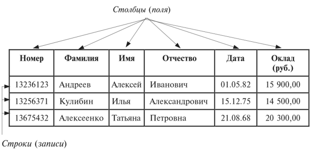

6. Банк данных: состав, схема
Банк данных, его состав и особенности
Банк данных (БнД) — это автоматизированная система специальным образом организованных данных — баз данных, программных, технических, языковых, организационно-методических средств и персонала, предназначенных для обеспечения централизованного накопления и коллективного многоцелевого использования данных.
Банк данных призван обеспечивать интегрированность и целостность баз данных, независимость и минимальную избыточность хранимых данных, их защиту от несанкционированного доступа или случайного уничтожения.
В общем случае банк данных состоит из базы данных (или нескольких баз данных), системы управления базами данных (СУБД), словаря данных, администратора, компьютерной системы и обслуживающего персонала (рис.1).
Рис.1 Состав банка данных
Пользователями компьютерной БД могут быть различные прикладные программы, программные комплексы, специалисты предметной области, выступающие в роли потребителей или источников информации.
Организация данных в базе данных требует предварительного моделирования, т.е. построения логической модели данных.
Модель данных — это некоторая абстракция, которая, будучи приложима к конкретным данным, позволяет разработчикам и пользователям трактовать их уже как информацию — сведения, содержащие не только данные, но взаимосвязь между ними. Главное назначение модели данных — систематизация разнообразной информации и отражение ее свойств по содержанию, структуре, объему, связям, динамике с учетом удовлетворения информационных потребностей всех категорий пользователей.
К классическим моделям представления данных относят иерархическую, сетевую и реляционную.
Иерархическая модель данных представляет информационные отображения объектов реального мира — сущности и их связи в виде ориентированного графа, или дерева (рис.2).
В иерархической модели отношения между данными бывают типа «родитель — потомки», т.е. у каждого объекта только один родитель (у корневого объекта нет родителя), но в принципе может быть несколько потомков.
Рис.2 Структура иерархической модели
Такие отношения принято изображать в виде дерева, где ребро между объектами отображает наличие некоторого отношения, причем название отношения пишется на ребре. Например, между объектами «клиент» и «заказ» может быть отношение, которое называется «делает», а между «заказ» и «товары» — отношение «состоит из».
В случае, когда граф отношений между объектами может представляться не только древовидными структурами, имеют дело с сетевой моделью данных (рис.3). Сетевая модель организации данных является расширением иерархической модели. В иерархических структурах
Рис.3 Представление связей в сетевой модели
запись-потомок должна иметь только одного предка — в сетевой структуре данных потомок может иметь любое число предков.
Сетевая модель, как более общая, предоставляет большие возможности по сравнению с иерархической, однако она сложнее в реализации и использовании.
В настоящее время наибольшее распространение при разработке БД получила реляционная модель данных. Понятие реляционной модели данных (от английского relation — отношение) связано с разработками Е. Кодда. Эти модели характеризуются простотой структуры данных, удобным для пользователя табличным представлением и возможностью использования формального аппарата реляционной алгебры и реляционного исчисления для обработки данных.
Реляционная модель ориентирована на организацию данных в виде двумерных таблиц. Реляционная таблица представляет собой двумерный массив и обладает следующими свойствами:
• каждый элемент таблицы — один элемент данных;
• все столбцы в таблице однородные, т.е. все элементы в столбце имеют одинаковый тип (числовой, символьный или другой) и длину;
• каждый столбец имеет уникальное имя;
• одинаковые строки в таблице отсутствуют;
• порядок следования строк и столбцов может быть произвольным.
Реляционная организация БД в виде таблицы СОТРУДНИКИ представлена на рис.4

Рис.4 Содержимое файла (таблицы) СОТРУДНИКИ базы данных
Отношения представлены в виде таблиц, строки которых соответствуют записям, а столбцы — полям. Структурные элементы реляционной базы данных описаны ниже.
Поле, каждое значение которого однозначно определяет соответствующую запись, называется простым ключом. Если записи однозначно определяются значениями нескольких полей, то такая таблица базы данных имеет составной ключ. Чтобы связать две реляционные таблицы, необходимо ключ первой таблицы ввести в состав ключа второй таблицы или ввести в структуру первой таблицы внешний ключ - ключ второй таблицы.
Проектирование реляционной БД состоит из трех самостоятельных этапов: концептуального, логического и физического проектирования.
Целью концептуального проектирования является разработка БД на основе описания предметной области. Описание должно содержать совокупность документов и данных, необходимых для загрузки в БД, а также сведения об объектах и процессах, характеризующих предметную область. Разработка БД начинается с определения состава данных, подлежащих хранению в БД для обеспечения выполнения запросов пользователя. Затем производятся их анализ и структурирование.
Поле
Элементарная единица логической организации данных, которая соответствует отдельной, неделимой единице информации — реквизиту
Для описания поля используются характеристики: имя (например, Номер, Фамилия, Имя, Отчество, Дата); тип (например, символьный, числовой, дата); длина (например, 20 байт, причем определяется максимально возможным количеством символов); точность для числовых данных (например, два десятичных знака для отображения дробной части числа)
Запись
Совокупность логически связанных полей Структура записи определяется составом и последовательностью входящих в нее полей, каждое из которых содержит элементарное данное
Запись соответствует составной единице информации — документу
Файл (таблица)
Именованная совокупность одинаковых по структуре экземпляров записей
Каждый экземпляр записи однозначно идентифицируется уникальным ключом записи
В структуре записи файла указываются поля, значения которых являются ключами: первичными (они идентифицируют экземпляр записи) и вторичными (они выполняют роль поисковых или группировочных признаков)
Файл (таблица) соответствует составной единице информации — информационному массиву
Пример описания логической структуры записи файла (таблицы) СОТРУДНИКИ представлен на рис.5.
Логическое проектирование осуществляется с целью выбора конкретной СУБД и преобразования концептуальной модели в логическую. Разрабатываются структуры таблиц, связи между ними и определяются ключевые реквизиты.
Этап физического проектирования дополняет логическую модель характеристиками, которые необходимы для определения способов физического хранения и использования БД, объема памяти и типа устройств для хранения.
При физической организации баз данных имеют дело не с представлением данных в прикладных программах, а с их размещением на запоминающих устройствах.
Рис.5 Описание логической структуры записи файла (таблицы) СОТРУДНИКИ
При выборе физической организации решающим фактором является эффективность, причем на первом месте стоит обеспечение эффективности поиска, далее идут эффективность операций занесения и удаления и затем обеспечение компактности данных. Кроме того, в последнее время большую актуальность приобрели проблемы защиты данных от несанкционированного доступа.
В результате проектирования БД должна быть разработана информационно-логическая модель данных, т.е. определен состав реляционных таблиц, их структура и логические связи. Структура реляционной таблицы определяется составом полей, типом и размером каждого поля, а также ключом таблицы.
В последние годы появились и активно внедряются постреляционная, многомерная и объектно-ориентированная модели данных, разрабатываются системы, основанные на других моделях данных, расширяющих существующие: объектно-реляционные, семантические и др. Некоторые их них служат для интеграции баз данных, баз знаний и языков программирования.
Система управления базами данных (СУБД) — комплекс программных и языковых средств, предназначенный для создания, ведения и совместного использования БД многими пользователями. СУБД различают по используемой модели данных. Они обеспечивают многоцелевой характер использования БД, защиту и восстановление данных. Наличие развитых диалоговых средств и языка запросов делает СУБД удобным средством для конечного пользователя.
Язык структурированных запросов SQL (Structured Query Language) является стандартным языком запросов по работе с реляционными БД. Он предназначен для выполнения операций над таблицами
(создание, удаление, изменение структуры) и над данными таблиц (выборка, изменение, добавление и удаление). SQL не содержит операторов управления, организации подпрограмм, ввода-вывода и поэтому автономно не используется. Обычно он погружен в среду встроенного языка программирования СУБД (например, VBA — Visual Basic for Applications СУБД MS Access и др.).
Стандарт языка SQL поддерживает современные реализации ряда языков программирования. В специализированных системах разработки приложений типа клиент-сервер среда программирования, кроме того, обычно дополнена коммуникационными средствами, средствами разработки пользовательских интерфейсов, средствами проектирования и отладки.
Основным назначением языка SQL является подготовка и выполнение запросов пользователей.
К наиболее важным признакам классификации современных СУБД могут быть отнесены:
• среда функционирования — класс компьютеров и ОС для работы СУБД;
• тип поддерживаемой в СУБД модели данных;
• возможности встроенного языка СУБД, его переносимость в другие приложения (SQL, Visual Basic и др.);
• наличие развитых диалоговых средств конструирования таблиц, форм, запросов, отчетов, макросов и средств работы с БД;
• возможность работы с нетрадиционными данными в корпоративных сетях (страницы HTML, сообщения электронной почты, звуковые файлы, изображения и др.);
• уровень использования — локальная СУБД (для настольных систем), архитектура клиент-сервер, многопроцессорная СУБД (с параллельной обработкой данных);
• использование объектной технологии OLE (Object Linking and Embedding — связывание и внедрение объектов);
• возможности интеграции данных из разных СУБД;
• степень поддержки языка SQL и возможности работы с сервером баз данных (SQL-сервером);
• наличие средств приложений, позволяющих не проводить полной инсталляции СУБД для тиражируемых приложений пользователя.
Приложение — программа или комплекс программ, которые обеспечивают автоматизацию обработки данных для прикладной задачи пользователя, работающего с БД. В общем случае с одной БД могут работать несколько различных приложений. Например, если БД моделирует некоторое предприятие, то для работы с ней могут быть созданы приложения: одно — обслуживающее подсистему учета кадров, другое — подсистему расчета заработной платы сотрудников, третье — подсистему складского учета и т.д. Предполагается, что приложения, работающие с одной БД, могут работать параллельно и независимо друг от друга, и именно СУБД призвана обеспечить их работу с БД так, чтобы каждое из них выполнялось корректно и учитывало все изменения в БД, вносимые другими приложениями.
Приложения создаются с помощью системы программирования, использующей средства доступа к БД.
Услугами банка данных пользуется большое число пользователей. Поэтому в банке данных предусматривается словарь данных — подсистема банка данных, предназначенная для хранения информации о структурах данных, взаимосвязях файлов БД друг с другом, типах данных и форматах их представления, кодах защиты и разграничения доступа и т.п.
Функционирование банка данных невозможно без участия специалистов — администраторов БД. Это группа пользователей, отвечающих за выработку требований к БД, ее проектирование, создание, эффективное использование и сопровождение. Для выполнения функций администратора в СУБД предусмотрены различные служебные программы. При работе в компьютерной сети администратор БД, как правило, взаимодействует с администратором сети.
Компьютерная система, на базе которой функционирует банк данных, представляет собой совокупность взаимосвязанных и согласованно действующих компьютеров и других устройств, обеспечивающих автоматизацию процессов приема, обработки и выдачи информации пользователям. Используемая система должна иметь процессоры с приемлемой мощностью, достаточный объем оперативной и внешней памяти.
Обслуживающий персонал банка данных (программисты, инженеры по техническому обслуживанию компьютеров, административный аппарат) призван поддерживать технические и программные средства в работоспособном состоянии, осуществлять обеспечение совместимости и взаимодействия всех составляющих, контроль за работой банка данных, за качеством информации.
Банк данных и БД в случае расположения на одном компьютере называются локальными, при расположении на нескольких компьютерах, соединенных компьютерной сетью, — распределенными.
Локальные базы и банки данных предназначены для организации более простого и дешевого способа информационного обслуживания пользователей, работающих с небольшими объемами данных при решении несложных задач.
Системы распределенных баз данных состоят из набора узлов, связанных вместе коммуникационной сетью, в которой:
• каждый узел обладает своими собственными системами баз данных;
• узлы работают согласованно, поэтому пользователь может получить доступ к данным на любом узле сети, как будто все данные находятся на его собственном узле.
На рис.6 приведен пример распределенной базы данных.
Рис.6 Распределенная база данных
Распределенные банки и базы данных предоставляют более гибкие формы обслуживания многочисленных удаленных пользователей при работе со значительными объемами данных в условиях географической или структурной разобщенности.